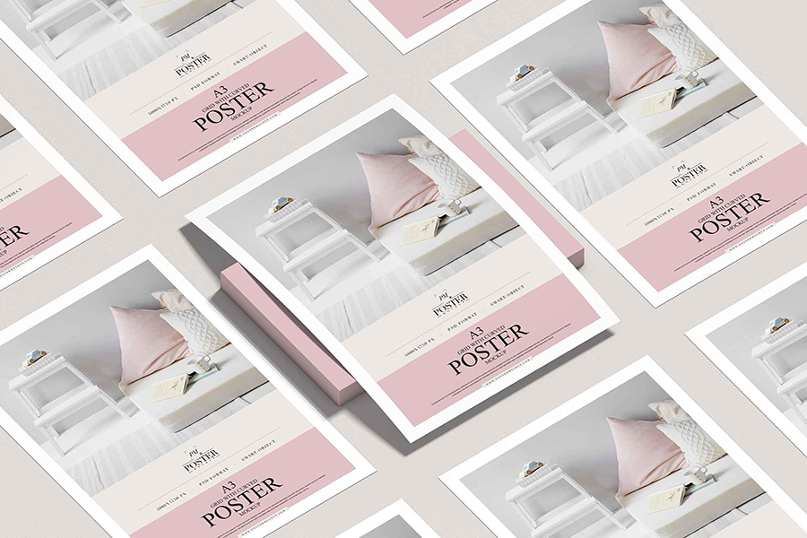

HOME > 제품정보 > 인쇄용지
인쇄용지

첨단 컴퓨터 조절방식(DCS 및 QCS)으로 평량,
두께, 회분, 수분 등이
자동 조절되어 섬유배향성이 우수하고 종이의
치수안정성이 뛰어납니다.
-
miilk 시리즈류
- miilk
- 특징 miilk는 빳빳하고 매끄러운 감촉을 지닌 복사용지로써 복사기, 레이저프린터, 잉크젯프린터, 일반 사무용도까지 폭넓게 사용할 수 있는 고급 복사용지입니다.
- 용도 복사용지, 프린터용지, 사무용지
- 평량 75g, 80g
- miilk Photo
- 특징 miilk Photo는 기존 복사지와는 차원이 다른 두툼한 두께감과 매끈하고 은은한 광택이 나는 제품으로 컬러가 많이 들어간 출력물 뿐만 아니라 사진출력에도 적합한 용지입니다
- 용도 고급인쇄물, 디지털 인쇄물, 보고서 표지 등의 컬러 출력물
- 평량 120g
- miilk Green
- 특징 miilk Green은 종이 제조 시 고지(폐지) 40%를 사용하여 제작된 친환경 재생 복사지입니다. 자연에 이로울 뿐만 아니라, 인쇄품질도 일반 복사용지와 동일한 품질을 선보입니다.
- 용도 일반 복사용
- 평량 75g, 80g
- miilk PURE
- 특징 miilk Pure는 표면에 항균 기능이 추가된 복사지로, 종이 한 장까지 안전하게 사용할 수 있습니다. 항균 기능을 통해 표면의 세균 증식 방지 및 억제에 효과적이며, 매끄럽고 빳빳한 촉감으로 인쇄품질까지 함께 생각한 제품입니다. * 항균 기능 관련 보다 자세한 내용은 [제품소개-주요제품 -miilk-Pure]를 통해 확인하실 수 있습니다.
- 용도 사무/가정 일반/고급 복사용, 외부 보고용(PT, 회의, 면접), 고해상도 컬러 출력용
- 평량 80g
- miilk Beige
- 특징 miilk Beige는 눈의 피로도를 줄이고자 은은한 미색을 적용한 제품입니다. 장기간 사용되는 많은 양의 복사물, 출력물에 특화된 용지입니다.
- 용도 많은 페이지의 책자 제본용(대학 논문, 학습지, 교본), 작은 글씨가 많아 눈의 피로도가 높은 출력물 등
- 평량 80g
-
백상지류
- 뉴백상지
- 특징 뉴백상지는 은은한 색상과 부드러운 촉감으로 인쇄면성이 탁월하며 표면강도가 우수하고 지분이 적어 인쇄작업성이 우수한 제품입니다.
- 용도 일반 복사용
- 평량 80g, 90g, 100g, 120g
- 뉴클래식
- 특징 뉴클래식은 기존 MFC지 보다 눈부심이 적으면서 백상지보다는 은은한 광택을 자랑하는 종이입니다. 기존 백상지와 대비하여 2% 이상 높은 불투명도를 자랑합니다. 원료에서부터 불투명도가 좋은 펄프를 배합하여 생산하기 때문에 두께에 비해 불투명도가 뛰어납니다.
- 용도 단행본, 학습지, 전문교재
- 평량 70g, 80g
-
코트지류
- Hi-Q 밀레니엄아트
- 특징 인쇄작업성, 품질균일성이 한단계 업그레이드된 프리미엄 아트지로서 평활성 및 색상이 우수하여 인쇄 시 어떤 색상이든 선명하게 재현합니다. 강도가 우수하여 인쇄 작업성이 뛰어나며, 인쇄 시 발생하는 지분/픽킹이 적어 우수한 인쇄품질을 자랑합니다.
- 용도 카탈로그, 브로슈어, 화보 등 고급인쇄물. 메뉴얼, 리플렛, 잡지 등 책자와 캘린더
- 평량 100g, 120g, 150g
- Hi-Q 듀오매트
- 특징 뛰어난 평활성과 탁월한 백감도의 고품격 매트지입니다. 은은하고 부드러우며 균일한 면성이 강점인 Hi-Q 듀오매트는 뛰어난 백감도와 함께 인쇄 광택 등의 효과로 최적의 인쇄 효과를 얻을 수 있습니다.
- 용도 카탈로그, 브로슈어, 화보 등 고급인쇄물. 메뉴얼, 리플렛, 잡지 등 책자와 캘린더
- 평량 100g, 120g
- Hi-Q 편면아트
- 특징 강도가 우수하고 색상 재현성이 우수한 편면코팅 아트지로 쇼핑백 제작용도로 탁월한 제품입니다.
- 용도 고급 쇼핑백
- 평량 100g, 120g
- Hi-Q 미스틱
- 특징 놀랍도록 가볍고 두꺼운 느낌을 주는 미스틱은 기존 매트지와는 차별화된 새로운 질감의 고급 아트지입니다. 깔끔하고 선명한 인쇄품질로 색 발현성이 뛰어나 다양한 디자인과 컬러풀한 사진들이 리얼하게 잘 표현됩니다.
- 용도 단행본 표지, 잡지, 캘린더, 메뉴얼, 레포트 등
- 평량 83g, 90g, 105g, 128g